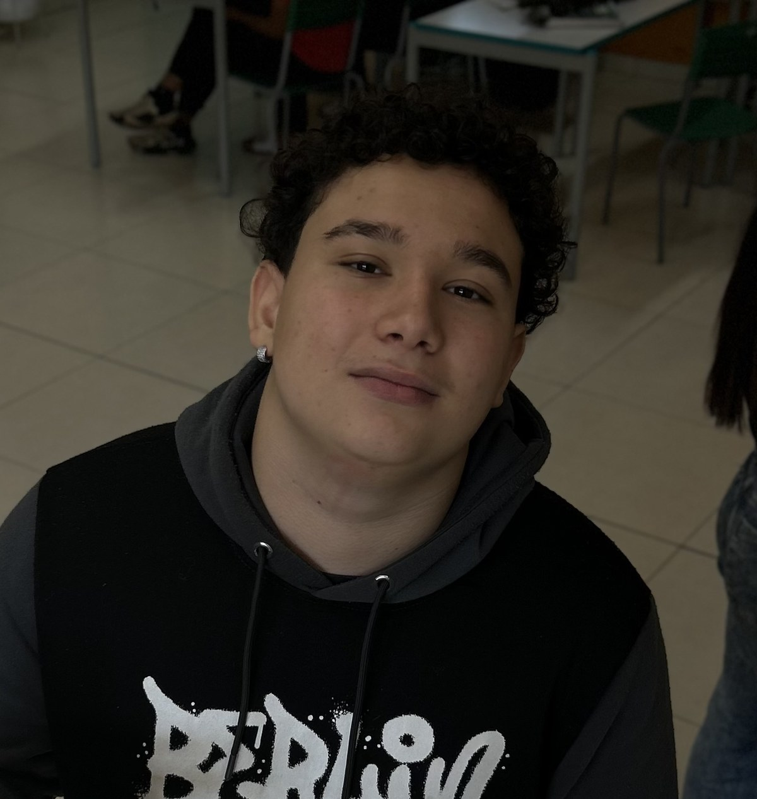

Desenvolvimento web
Criação de páginas responsivas e interfaces com estrutura semântica.
OLÁ, EU SOU
Estudante de Desenvolvimento de Sistemas, explorando ideias e transformando linhas de código em projetos reais.

Gosto de aprender criando: de páginas web a experiências interativas e jogos. Meu objetivo é evoluir a cada projeto e desenvolver soluções úteis, criativas e bem construídas.
Atualmente estudo Desenvolvimento de Sistemas e pratico programação por meio de projetos acadêmicos e pessoais. Tenho interesse em desenvolvimento web, lógica de programação, banco de dados e criação de jogos.
Criação de páginas responsivas e interfaces com estrutura semântica.
Prática com lógica, manipulação de dados e fundamentos de banco de dados.
Exploração de mecânicas, sprites e protótipos de jogos 2D.
Organização de projetos, versionamento e publicação de sites.
As tecnologias listadas representam áreas de estudo e prática. Ajuste conforme sua experiência real.
Uma seleção de projetos acadêmicos e pessoais. Adicione os links reais para que as pessoas possam explorar seu código.
Projeto de site com informações de seleções e proposta de cadastro, consulta e gerenciamento de times.
Projeto pessoal em desenvolvimento na Unity: um jogo 2D de temática futurista. Estou trabalhando nas mecânicas, movimentação, inimigos e sistemas de armas.
Experimentos de layout, formulários, temas claro/escuro e interfaces adaptadas para celular e computador.
Os projetos acima são exemplos baseados nos tipos de trabalho que você desenvolve. Troque descrições e links pelos repositórios reais antes de publicar.
Estou aberto a trocar ideias, aprender com outras pessoas e conhecer oportunidades de estágio.